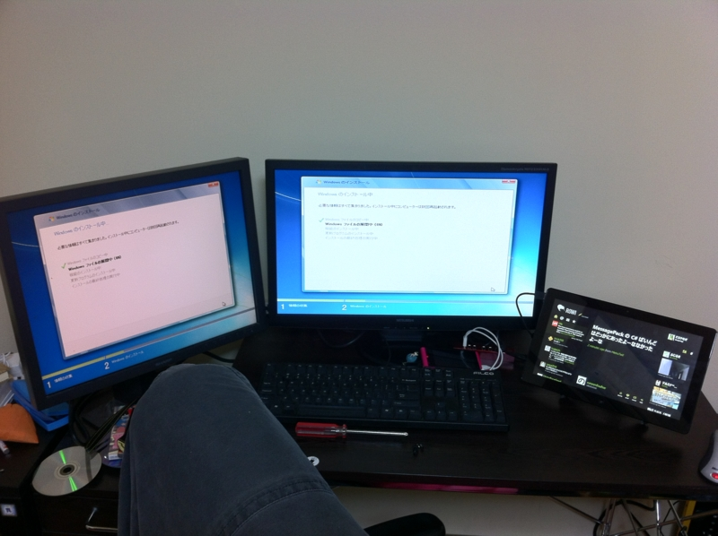

犯人はお前だ！
公開日：
なんかインストールでコケるんですけど！ - だるろぐ の原因を突き止めようと四苦八苦。最初は Windows 8 Release Preview に含まれているドライバーが未成熟なのかなと思っていたのだけど、Windows 7 のインストールにすら失敗する。パーツを抜いて最小構成にしてみてもダメで……やっぱり、どうも電源が怪しい。

玄人志向 電源 80PLUS Bronze 630W プラグイン KRPW-P630W/85+
- 出版社/メーカー: 玄人志向
- メディア: Personal Computers
- 購入: 1人 クリック: 31回
- この商品を含むブログを見る
今使っているのは、1ヶ月前（連休4日目。PCを自作した。 - だるろぐ）に買った玄人志向の電源。これが、ある一定の負荷がかかると落ちてしまう。

たとえば、Windows 8 Release Preview や Windows 7 のインストールでは、最終ステップの手前で電源が落ちる。再起動しても、「コンピューターが予期せず再起動されたか、予期しないエラーが発生しました」というエラーが出て、インストールを進めることができない。
ちなみに、 Windows 8 Consumer Preview の場合は、同じく途中で電源が落ちるのだけど、再起動するとなんなく処理を進めることができた。けれど、デスクトップを3分ほど表示していると、いつのまにか電源が落ちてしまう。以前は使えていたのに、どういうことなんだろう。
 JP Version 保証 7年間 CMPSU-650HXJP")
Corsair HX 650 W 電源 ATX コネクター(脱着式) JP Version 保証 7年間 CMPSU-650HXJP
- 出版社/メーカー: CORSAIR
- 発売日: 2010/01/06
- メディア: Personal Computers
- クリック: 4回
- この商品を含むブログ (1件) を見る
今回チョイスしたのは、これ*1。お値段は倍ぐらい違う！ セミモジュラー式というんだろうか、必要なケーブルのみを挿して使える点だけは譲りたくなかったのだけど、実はまともな電源でこれを採用しているのはかなり少ない or お値段が高いのね……
結局、これに変えるとあっさりインストールが通った。残念だけど、もう玄人志向の電源は買いたくない。使用頻度だってたいしたことなかったのに、1ヶ月ももたないだなんて！ こう頻繁に電源が落ちると、ほかのパーツにも悪影響が及びそうだしね。
教訓： 電源だけはいいものを買いましょう。


MITSUBISHI 23型ワイド液晶ディスプレイ RDT233WLM-D
- 出版社/メーカー: 三菱電機
- 発売日: 2011/01/12
- メディア: Personal Computers
- 購入: 3人 クリック: 91回
- この商品を含むブログ (7件) を見る
念願のデュアルモニター環境も構築（というか復活）できて、大満足。これで久しぶりにまともなPC環境が手に入りました！
*1:Amazonだとアキバの店より3,000円も安い！ 本当に次買うときは考えてしまう……